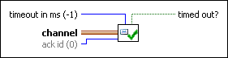

Requires: Base Development System
Waits for an acknowledgement from a Messenger channel. If no acknowledgement from the channel, this endpoint waits until the acknowledgement is available.
You can drop this endpoint on the block diagram by right-clicking a Messenger channel terminal or wire and selecting Create»Channel Reader»Messenger»Read Ack.
